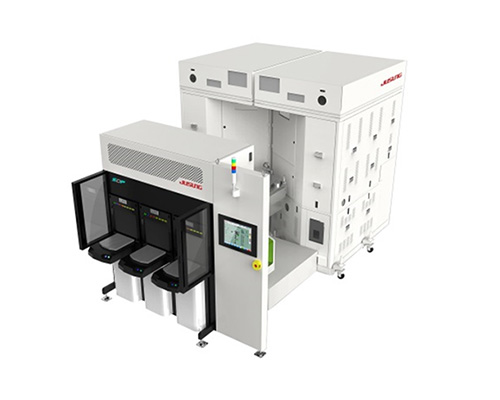

home>
제품소개>
반도체장비
반도체장비
빠르게 발전하는 반도체 시장, 그 변화가 세상을 선도합니다
semiconductor equipment
필요한 제품을 확인하세요


-

SDP CVD (CVD & ALD)
“증착" 과정 모두를 대응할 수 있는 신개념 반도체 제조장비
플라즈마로 인한 기판 손상 없이 300도 이하의 저온에서 우수한 최고의 막질을 균일하게 형성
20nm 이하의 미세 반도체 공정에서 실리콘 산화막, 실리콘 질화막, 금속막 및 High-K 공정의 모든 CVD 및 ALD 공정 대응
자세히보기 -
TSD CVD
세계 최초의 공간과 시간분할을 동시에 가능
시∙공간 분할을 통한 치밀한 막 생성 및 플라즈마 손상 Zero
CVD 및 ALD, Nitridation, Oxidation, Doping 등 다양한 공정에 적용 가능
우수한 막질, 넓은 공정 Window
자세히보기 -
UHV CVD
산소 및 수증기 분압 최소화를 통한 초고순도(Ultra Clean)의 증착 환경 제공
고유의 저온 (550℃) 플라즈마 기판 세정
신개념 상온 플라즈마 기판 세정
저온 선택적 에피 성장
자세히보기 -

DRY ETCH
Poly 및 Metal 등 모든 공정에 적용가능
웨이퍼에 주는 손상 최소화, 식각량 균일하게 유지
웨이퍼 가장자리까지 정밀 조절을 통한 CDU 향상
낮은 유지보수 비용 및 안정성, 양산성 우수
자세히보기